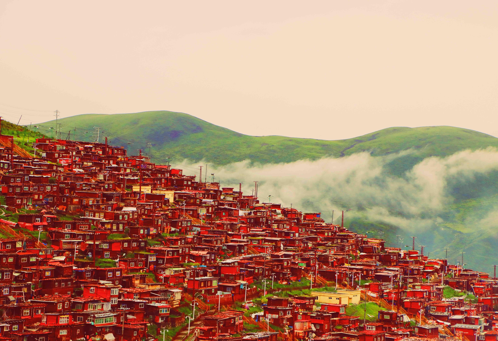
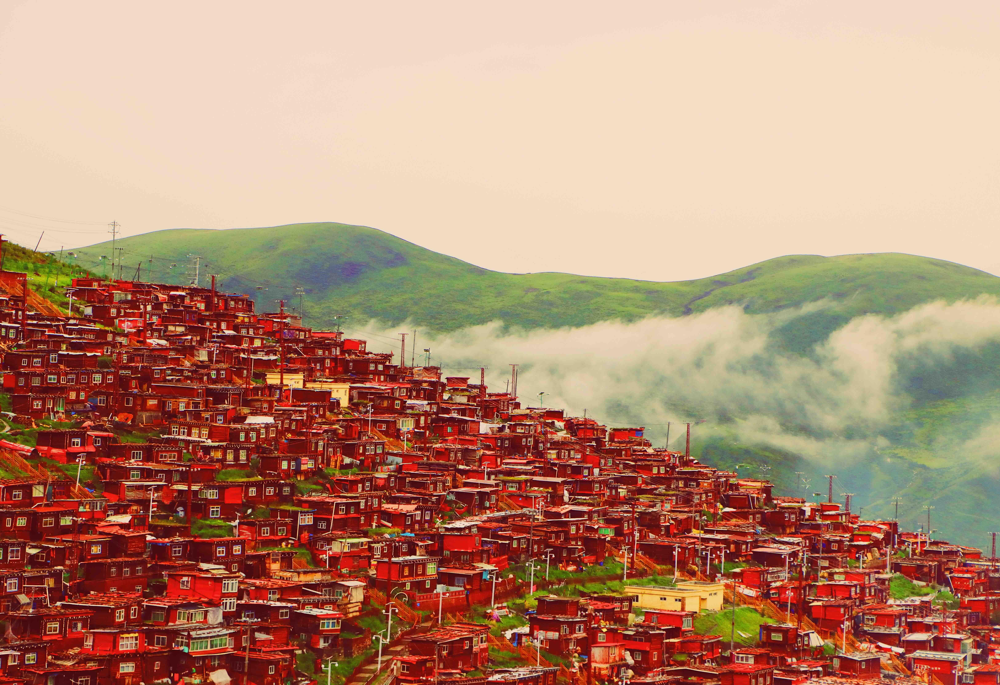

Chengdu - My Professional Beginning
The city where my career journey took flight and my passion for exploration deepened.
My time in Chengdu marked the true beginning of my professional journey. It was here that I worked as a Data Scientist, applying skills in Programming, Big Data analysis, Machine Learning, and Data Visualization. Storytelling to stakeholders and translating complex data into actionable insights became part of my daily rhythm.
 

Every project, every client meeting, every late-night debugging session strengthened my confidence and sharpened my vision of the future. In Chengdu, I found clarity — a deep understanding of the kind of career I wanted to build: one driven by curiosity, creativity, and continuous learning.

Beyond the professional milestones, Chengdu captured my heart with its stunning landscapes, vibrant culture, and world-famous food. The rhythm of the city — slow, kind, and joyful — reminded me that life is not just about ambition, but also about savoring every moment.
During weekends, I often ventured out alone, driving deep into Sichuan province. My love for off-road driving took me through hidden valleys, soaring mountains, and remote villages, forging memories few have had the chance to create.
Chengdu wasn't just the place where I launched my career — it became a living chapter of personal discovery. It taught me not only how to excel in my craft, but how to savor the journey while navigating toward my dreams.